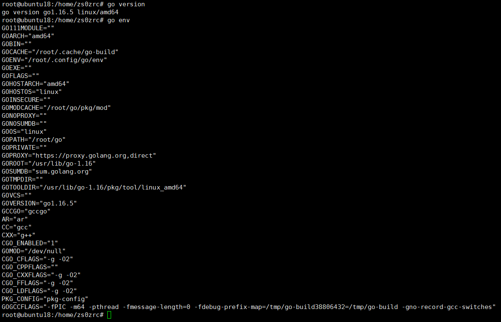

Ubuntu18配置Go环境
安装go
获取最新的软件源包，并添加到当前的apt库中
add-apt-repository ppa:longsleep/golang-backports
安装go
apt-get update
apt-get install golang-go
检查go版本
go version
检查go的环境变量
go env

其中GOROOT是go语言安装的路径，GOPATH用于指定我们的开发工作区(workspace)，是存放源代码、测试文件、库静态文件、可执行文件的地方。按照Go开发规范，GOPATH目录下的每个工作一般分为三个子目录:src,pkg,bin，其中src目录放的是开发的源代码文件，其下面对应的目录称为包,pkg放的是编译后的库静态文件，bin放的是源代码编译后台的可执行文件。
这里我将GOPATH路径设置为/home/go-build，并且导入到环境变量PATH中
echo "export GOPATH=/home/go-build" >> ~/.profile
echo "export PATH=$PATH:$GOPATH/bin" >> ~/.profile
source ~/.profile
创建go-build目录及其子目录src bin pkg
mkdir go-build
chmod 777 go-build
cd go-build
mkdir src bin pkg
chmod 777 src bin pkg
设置go代理
go有些包是下不了的....需要代理，这里设置go代理为https://goproxy.cn/
执行下面的命令：
echo "export GO111MODULE=on" >> ~/.profile
echo "export GOPROXY=https://goproxy.cn" >> ~/.profile
source ~/.profile